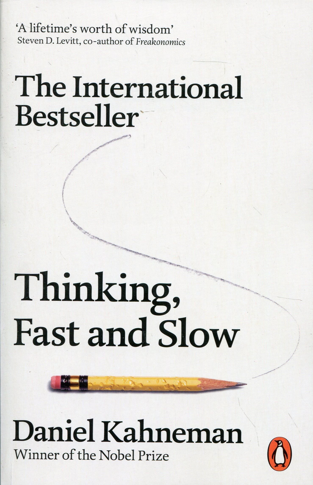
Thinking Fast and Slow
Kahneman explains much of human behavior as a dialog between System 1 and System 2. System 1 represents our instincts and immediate (fast thinking) reactions, responses that have evolved over millenia. System 2 is our conscious and thoughtful behavior, our logic and reasoning (slow thinking). We think of ourselves as rational creatures, more System 2 than 1. However, not only is the inverse demonstrably true, our System 2 even serves to defend our automatic System 1 responses, rather than truly analyze them.
The bad news is that our fast-thinking instincts are full of bias and are generally easy to manipulate. What’s worse is that our slow-thinking mind often finds rational-sounding stories to justify biased conclusions.
The good news is that we can train System 2 to be more aware of these biases and learn to spot the difference between justifying a quick conclusion and truly analyzing a situation. Kahneman lays out the theories and research on how we create and enforce these biases and examples of how they may come up in our day to day life.
How I see this as a UX practitioner: as product designers (by which I mean anyone who is making a product, including managers and developers), we are imprinting a part of ourselves onto our "users" (human beings). If we create and release our products quickly and without much thought, then we are imprinting a very large and unfiltered part of ourselves (let's call this Fast Work). If we slow down, do the research, collaborate across disciplines, release, analyze, and iterate based on quantitative and qualitative feedback, then our imprint is greatly diluted, though of course still present (Slow Work).
There is nothing wrong with Fast work, just as we cannot live without our Fast Thinking System 1. But just as Kahneman suggests we be more conscious of the pitfalls of this mode of thinking, I believe we must also understand the risk of doing Fast Work, especially at scale. No amount of experience, intuition or intelligence can replace the value of Slow Work.
Just Enough Research
A short, simple summary of some basic UX research principles. Its main argument is that 'research' is really just critical thinking by another name, and that projects of any size benefit from its practice. Some of the main challenges standing in our...
Read More
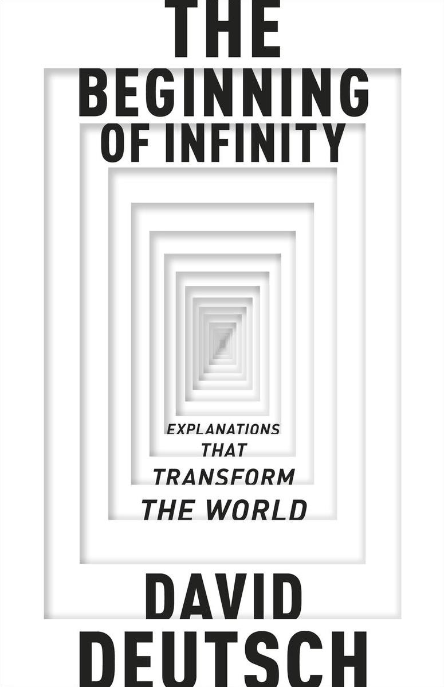
The Beginning of Infinity: Explanations that transform the world
"The quest for good explanations is, I believe, the basic regulating principle not only of science, but of the Enlightenment generally." Deutsch spends some time defining science and progress beyond the tenents of experimentation and observation. Stringent experimentation may help us evaluate...
Read More
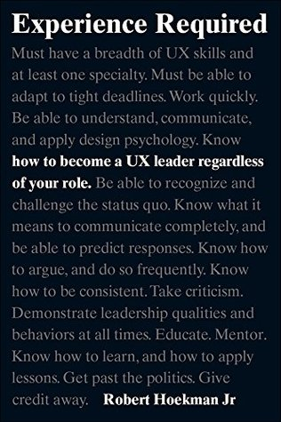
Experience Required: How to become a UX leader regardless of your role

UX Strategy: How to Devise Innovative Digital Products that People Want
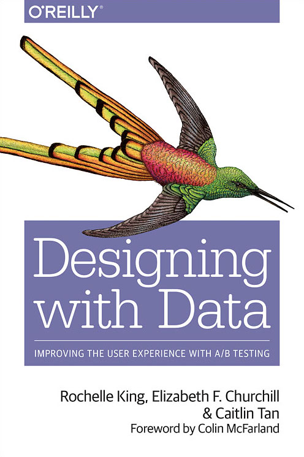
Designing with Data: Improving the User Experience with A/B Testing
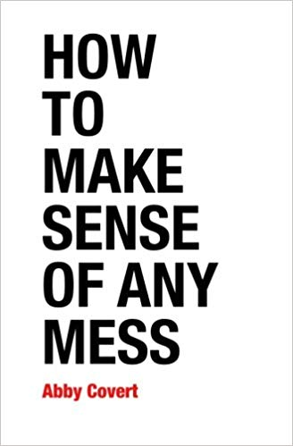
I listened to Abby Covert speak at an event in New York a while ago and was so impressed with her and her book that I bought it on the spot. The book is an informal, light, and short collection of different ways to communicate information and flows. While the examples are lightly weighted towards people who work in service or product design, I actually think Covert's breakdowns are approachable enough that basically anyone who has to put presentations together at work may benefit from reading it.
For example, below are 3 small doodles interspersed with her text as quick examples of communicating a journey, a structure, and a system.


 Covert goes well beyond diagrams. She tackles content strategy, taxonomy, research methods, and analysis. Perhaps my favorite is how she pre and endcaps the book, discussing intent, realities, constraints, and adjusting. If you work in at all complex organization, the following passage may ring true:
Covert goes well beyond diagrams. She tackles content strategy, taxonomy, research methods, and analysis. Perhaps my favorite is how she pre and endcaps the book, discussing intent, realities, constraints, and adjusting. If you work in at all complex organization, the following passage may ring true:
No matter what the mess is made of, we have many masters, versions of reality, and needs to serve. Information is full of history and preconceptions. Stakeholders need to: Know where the project is headed See patterns and potential outcomes Frame the appropriate solution for users. Users need to: Know how to get around Have a sense of what's possible based on their needs and expectations Understand the intended meaning It's our job to uncover subjective reality. An important part of that is identifying the differences between what stakeholders think users need and what users think they need for themselves.If you can't tell, this is one of my favorites. I believe that it's simple and clear tone makes it a valuable read even for experts who may have all these tools under their belt, but may not necessarily be able to explain them to non-experts.
How to Make Sense of Any Mess
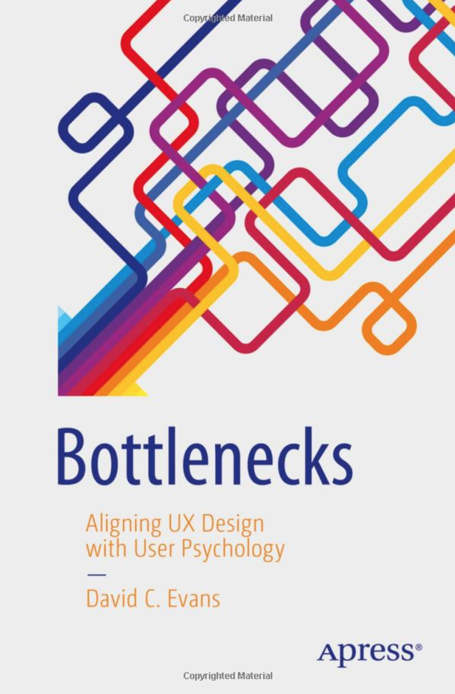
Bottlenecks: Aligning UX Design with User Psychology
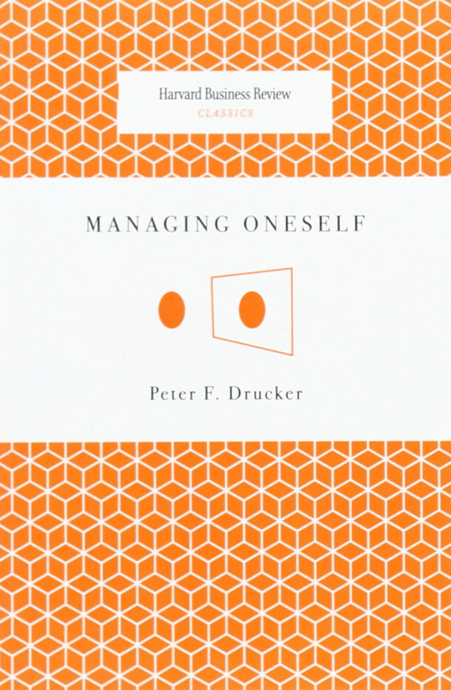
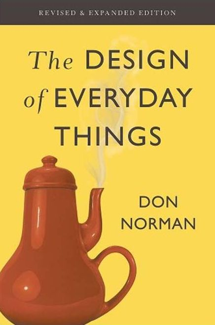
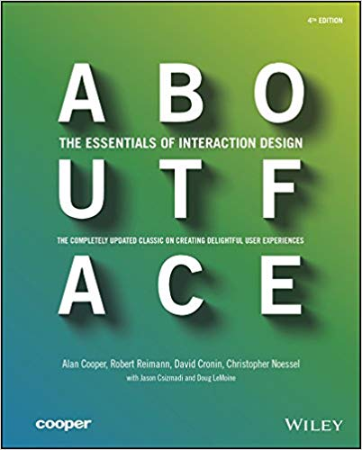

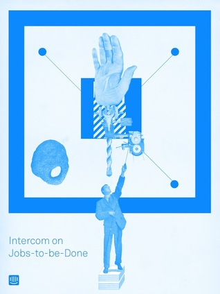
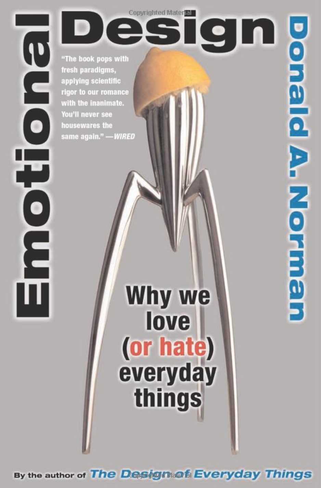
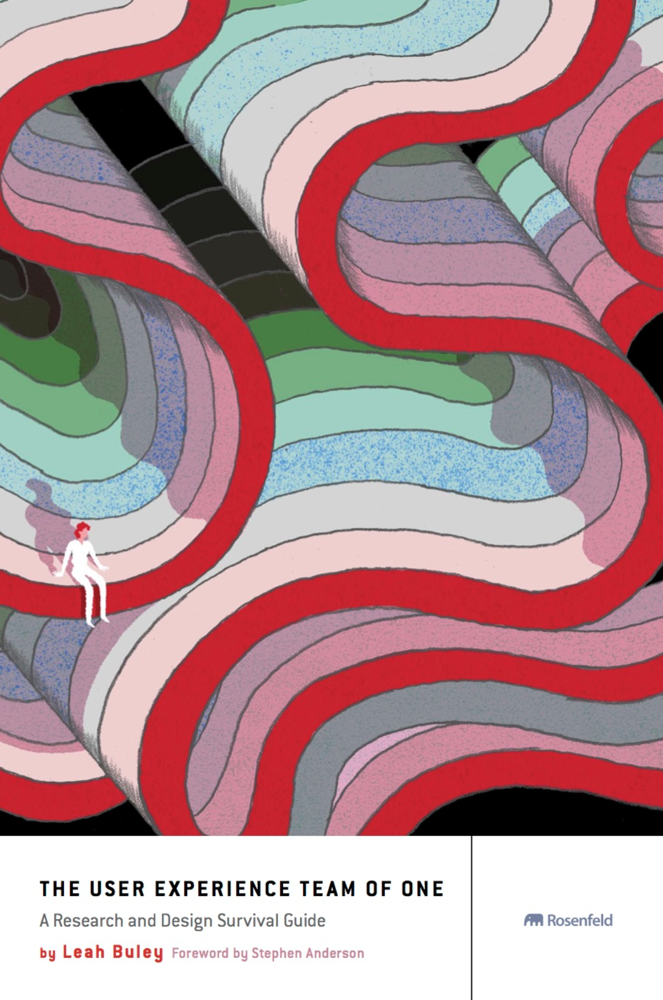
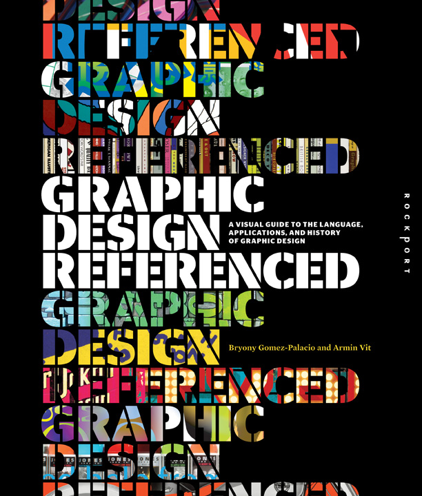